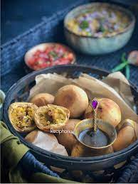

Litti Chokha

Description
Litti Chokha is a traditional dish eaten mainly in Bihar and Jharkhad. It can be had for lunch, dinner or you can make it on your holidays and you will surely love it. Litti is similar to Bati in appearance but there is a little difference. The Pitthi(stuffing) to be filled in it is made with Sattu and Litti is eaten with brinjal bharta or mashed potato. We can also prepare Mixed Veg Chokha. Let us start the preparation for Litti Choka.
Ingredients required to make Litti Chokha
- For dough
- Wheat flour - 400 grams (2 cup)
- Ajwain(carom seeds) - 1/2 tsp
- Ghee - 2 tbsp
- Curd - 3/4 cup
- Baking soda - 1/2 tsp
- Salt - 3/4 tsp
- For stuffing (Pitthi)
- Sattu - 200 grams (1 cup)
- Ginger - 1 inch long piece
- Green chilly - 2 to 4
- Green coriander(dhaniya) - 1/2 cup(finely chopped)
- Jeera(cumin seeds) - 1 tsp
- Ajwain(carom seeds) - 1 tsp
- Mustard oil - 1tsp
- Pickle spices - 1 tbsp
- Lemon - juice of 1 lemon (if you prefer)
- Salt - add to taste ( 1/2 tsp)
- For Chokha
- Brinjal(big) - 400 grams (1 or 2)
- Tomatoes - 250 grams ( 4 medium sized)
- Green chillies - 2 to 4 (finely chopped)
- Ginger - 1 1/2 inch long piece ( finely chopped)
- Green coriander - 2 tbsp ( finely chopped)
- Salt - add to taste (1 tsp)
- Mustard oil - 1 to 2 tsp